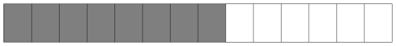
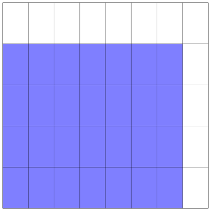
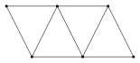
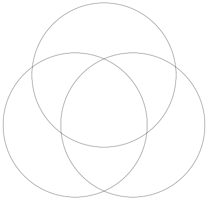
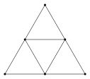

Cours en demi groupe
1. Séance du
1.1. Calculs
Sans calculatrice, effectuez les calculs suivants :
- \(2-\frac{1}{3}\)
- \(15^{2} - 5^2\)
- \(40\%\) de \(50\)
- \(1,25 \times 12\)
- Quelle est la distance parcourue en \(1\) h \(15\) min à \(120 \textrm{km/h}\) ?
- \(8\) croissants coûtent \(7,20\) €. Quel est le prix de \(2\) croissants ?
- Calculer l'expression \(x^2+1\) pour \(x = -1\).
- Quelle est l'écriture décimale de \(3 + 5\times 10^{-2}\).
- \(7 \times 0,5\)
- Le prix d'un manteau est de \(90\) €. Il baisse de \(20\%\). Quel est son nouveau prix ?
Source : la course aux nombres, édition 2022, niveau seconde
1.2. Sur le chapitre des évolutions
Compléter le tableau suivant, sans calculatrice (les calculs peuvent être menés de tête, ou bien sur l'ardoise) :
| quantité de départ | taux | coefficient multiplicateur | quantité d'arrivée |
|---|---|---|---|
| \(30\) | \(-10\%\) | ||
| \(10\) | \(+70\%\) | ||
| \(30\) | \(0,55\) | ||
| \(10\) | \(1,4\) |
1.3. Le lien entre la division et la notion d'inverse.
Relier chaque nombre avec son inverse.
| \(\frac{1}{3}\) | \(6\) | ||||
| \(\frac{1}{6}\) | \(\frac{4}{-5}\) | ||||
| \(0,1\) | \(3\) | ||||
| \(-1,25\) | \(10\) |
Justifier vos choix à l'aide de l'écriture fractionnaire.
1.4. Fraction et évolution
Un marchand propose de baisser le prix de son article du tier de son prix. Quel est le coefficient que vous devriez appliquer au prix de l'article pour trouver le prix proposé par le marchand ?
1.5. Equivalence de fraction.
Quelle proportion occupe la surface grisée dans la figure ci-dessous ?

Et ici ?
Que pouvez-vous remarquez entre les deux questions précédentes ? Expliquer ce lien à l'aide d'un calcul sur les fractions.
1.6. Aire et multiplication de fractions
Voici un calcul : \[ A = \frac{4}{5} \times \frac{7}{8} \]
Regardez la figure suivante :

Quelle est proportion de la surface grisée ? Quel est le rapport avec la valeur de \(A\) ?
1.7. Évolutions successives
Cela fait deux ans que le nombre d'habitants sur l'île des maths augmente de \(30 \%\).
Entre 2020 et aujourd'hui, quelle a été l'évolution globale des habitants de l'île des maths ?
Utilisez le schéma vu en cours.
1.8. Évolutions successives, et réciproque, par le calcul.
Soit \(x\) une inconnue qui représente une quantité d'argent quelconque.
- À l'aide des mots «hausse» ou «baisse», et «taux», interpréter l'expression \(E\) ci-dessous :
\[ E(x) = 1,3 \times 0,7 \times 0,9 \times x \]
- Simplifier l'expression de \(E\).
- Résoudre l'équation \(0.819x = 30\)
- Après toutes les hausses et baisses décrite à la question \(1\), on obtient une valeur \(E(x) = 30\) €. Quelle était la somme \(x\) au départ ?
1.9. Variation sous la forme d'un pourcentage
Sophie décide de réduire drastiquement son temps devant les écrans. En \(2022\), elle passait environ \(2\) heures et quart par jour devant les écrans. En \(2023\), elle décide de ne passer que \(55\) minutes sur les écrans par jour.
Déterminer le taux d'évolution en pourcentage de son temps d'écran par jour.
Arrodir le résultat à \(0,01\%\) près.
2. Problèmes
2.1. Un puzzle multiplicatif
Dans la table de multiplication ci-dessous, certaines cases ont été remplies, mais il manque les valeurs de la première ligne et de la première colonne.
 Trouver la valeur de \(A+B+C+D+E\).
Trouver la valeur de \(A+B+C+D+E\).
2.2. Totalement
On considère le graphe suivant :

Peut-on placer les nombres \(1, 2, 3, 4, 5\) et \(6\) sur chaque sommet, un par sommet, de tel sorte à ce que la somme des nombres de deux sommets adjacents soit différente à chaque arrête ?
2.3. Moyenne mystérieuse
Sophie a choisi sept nombres différents entiers dont la moyenne fait \(7\).
Quelle est le plus grand nombre possible qu'elle ait pu choisir parmi ces sept nombres ?
2.4. Multiple de trois
On considère un nombre \(n\) qui est un multiple de trois. On permute les chiffres de \(n\) pour former un nouveau nombre \(m\). Est-ce que \(m\) est un multiple de trois ? Si oui, pourquoi ? Et sinon, donnez un contre exemple.
Exemple : Si on prend \(n = 123\) qui est divisible par trois car \(123 = 41 \times 3\), et \(m=312\) on constate que \(m\) est aussi divisible par \(3\) puisque \(m = 104 \times 3\)
2.5. À emporter
On a demandé à \(35\) étudiants quels étaient leur plat à emporter préférés.
- \(24\) ont répondu «Chinois»
- \(16\) ont répondu «Indien»
- \(10\) ont répondu «Pizza»
Aucun d'entre eux n'ont répondu «les trois».
Tous ceux qui ont choisi «Pizza» ont aussi choisi «Chinois»
\(9\) de ceux qui ont choisi «Chinois» n'ont pas aimé soit «Indien» soit «Pizza».
Si tous les étudiants en ont choisi au moins un, combien on aimé «Indien» seulement ?

Figure 1 : Ceci est un indice
2.6. Totalement, la suite
Même consigne que le problème 2.2, mais avec le graphe suivant :

2.7. Le plus gourmand
On considère \(n\) pains au chocolat tous identiques, sauf un.
Ce dernier est le plus lourd, mais est indistinguable des autres.
Vous avez une balance (d'une taille aussi grande que nécessaire, infiniment précise). Expliquez votre stratégie pour trouver le pain au chocolat le plus lourd en utilisant le moins possible la balance.
Quelle est votre stratégie ?
Exemple : Pour \(n=81\) pains au chocolat, il suffit de \(4\) utilisations de la balance pour trouver à tous les coups le pain au chocolat le plus lourd, comment ?